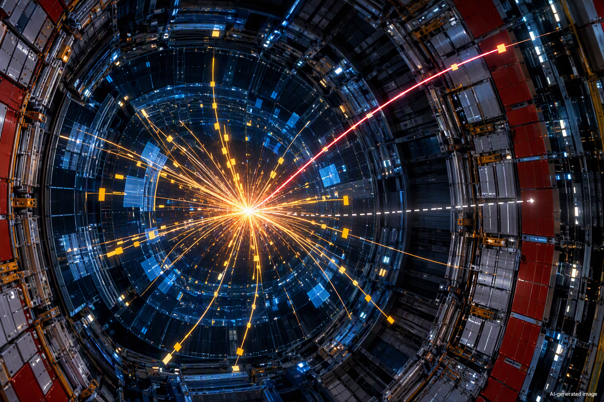

Νέα μέτρηση του μποζονίου W δοκιμάζει το Καθιερωμένο Πρότυπο
Το πείραμα CMS στο CERN μέτρησε με εξαιρετική ακρίβεια τη μάζα του μποζονίου W, πραγματοποιώντας έναν από τους αυστηρότερους ελέγχους της συνέπειας του Καθιερωμένου Προτύπου της Σωματιδιακής Φυσικής.

Το μποζόνιο W είναι ένα από τα στοιχειώδη σωματίδια που μεταφέρουν την ασθενή αλληλεπίδραση, τη δύναμη που βρίσκεται πίσω από σημαντικές διεργασίες όπως η β-διάσπαση των ατομικών πυρήνων. Η μάζα του έχει ιδιαίτερο ενδιαφέρον επειδή στο Καθιερωμένο Πρότυπο συνδέεται με άλλες θεμελιώδεις ποσότητες, όπως η μάζα του μποζονίου Z και οι παράμετροι της ηλεκτρασθενούς αλληλεπίδρασης. Αυτές οι σχέσεις επιτρέπουν στους φυσικούς να κάνουν εξαιρετικά ακριβείς προβλέψεις. Αν μια μέτρηση αποκλίνει σημαντικά από αυτές, η διαφορά μπορεί να αποτελεί ένδειξη ότι λείπει κάτι από τη σημερινή θεωρία. Ακόμη και άγνωστα βαριά σωματίδια, που δεν παράγονται άμεσα σε έναν επιταχυντή, μπορούν μέσω κβαντικών διορθώσεων να επηρεάσουν έμμεσα την προβλεπόμενη μάζα του W. Η ακριβής μέτρησή της είναι επομένως ένας ευαίσθητος τρόπος αναζήτησης αποκλίσεων από το Καθιερωμένο Πρότυπο, ιδιαίτερα μετά την προηγούμενη μέτρηση του πειράματος CDF στο Fermilab, η οποία είχε δώσει μια ασυνήθιστα υψηλή τιμή.
Η CMS Collaboration χρησιμοποίησε δεδομένα από συγκρούσεις πρωτονίων σε ενέργεια 13 TeV στον Μεγάλο Επιταχυντή Αδρονίων του CERN, τα οποία είχαν συλλεχθεί το 2016. Οι ερευνητές μελέτησαν γεγονότα στα οποία το W διασπάται σε ένα μιόνιο και ένα νετρίνο. Επειδή το νετρίνο διαφεύγει από τον ανιχνευτή χωρίς να καταγραφεί άμεσα, η μάζα του W δεν μπορεί να ανακατασκευαστεί τόσο απλά όσο η μάζα ενός σωματιδίου του οποίου όλα τα προϊόντα διάσπασης ανιχνεύονται. Η ομάδα χρησιμοποίησε γι' αυτό μια υψηλής ανάλυσης μέθοδο μέγιστης πιθανοφάνειας πάνω στις κινηματικές ιδιότητες των μιονίων, περιορίζοντας ταυτόχρονα πειραματικές και θεωρητικές αβεβαιότητες. Το αποτέλεσμα είναι μάζα 80.360,2 ± 9,9 MeV, η ακριβέστερη μέτρηση που έχει πραγματοποιηθεί μέχρι σήμερα στον LHC. Η τιμή συμφωνεί με την πρόβλεψη του Καθιερωμένου Προτύπου και δεν επιβεβαιώνει την υψηλότερη τιμή 80.434,0 ± 9,4 MeV που είχε αναφέρει το CDF.
Η σημασία της μέτρησης βρίσκεται ακριβώς σε αυτή τη συμφωνία. Η Φυσική πέρα από το Καθιερωμένο Πρότυπο δεν αναζητείται μόνο με την παραγωγή νέων σωματιδίων σε συγκρούσεις υψηλής ενέργειας, αλλά και με μετρήσεις τόσο μεγάλης ακρίβειας ώστε ακόμη και μικρές αποκλίσεις από τη θεωρία να γίνονται ορατές. Το αποτέλεσμα του CMS ενισχύει τη συνέπεια του Καθιερωμένου Προτύπου, χωρίς όμως να σημαίνει ότι αποκλείει κάθε πιθανή νέα Φυσική. Παράλληλα αναδεικνύει τη δυσκολία τέτοιων μετρήσεων: η ακρίβεια εξαρτάται τόσο από την εξαιρετικά λεπτομερή κατανόηση της απόκρισης του ανιχνευτή όσο και από θεωρητικές παραμέτρους που περιγράφουν τις συγκρούσεις πρωτονίων. Η ανάλυση χρησιμοποίησε μάλιστα μόνο μέρος των δεδομένων που έχει ήδη συγκεντρώσει το CMS, αφήνοντας περιθώριο για μελλοντικές βελτιώσεις. Έτσι, η ολοένα ακριβέστερη «ζύγιση» του W παραμένει ένα ισχυρό εργαλείο για να δοκιμάζουμε τα όρια της σημερινής περιγραφής του μικρόκοσμου. Δείτε την πρωτότυπη επιστημονική δημοσίευση.